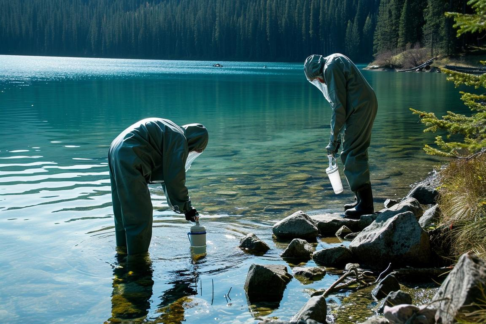
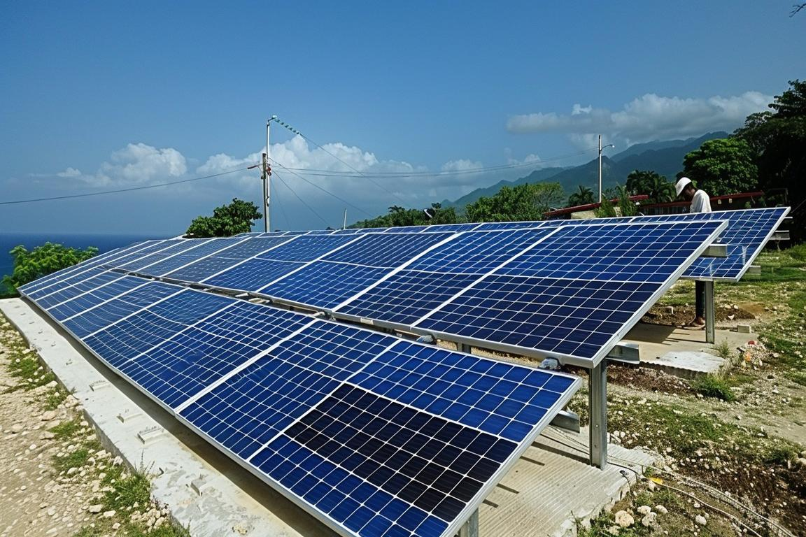
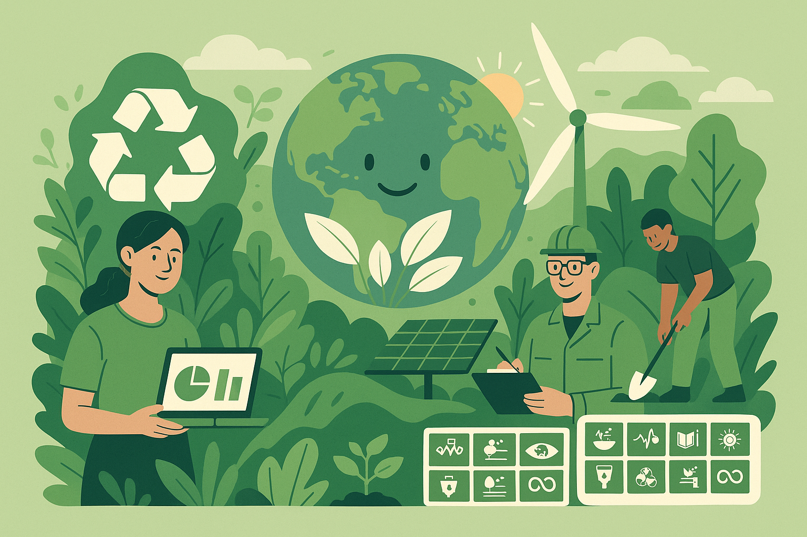
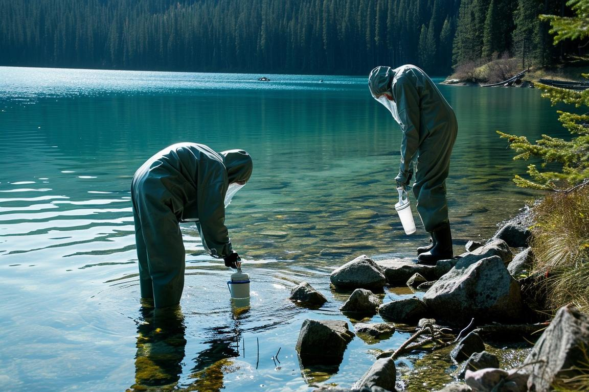
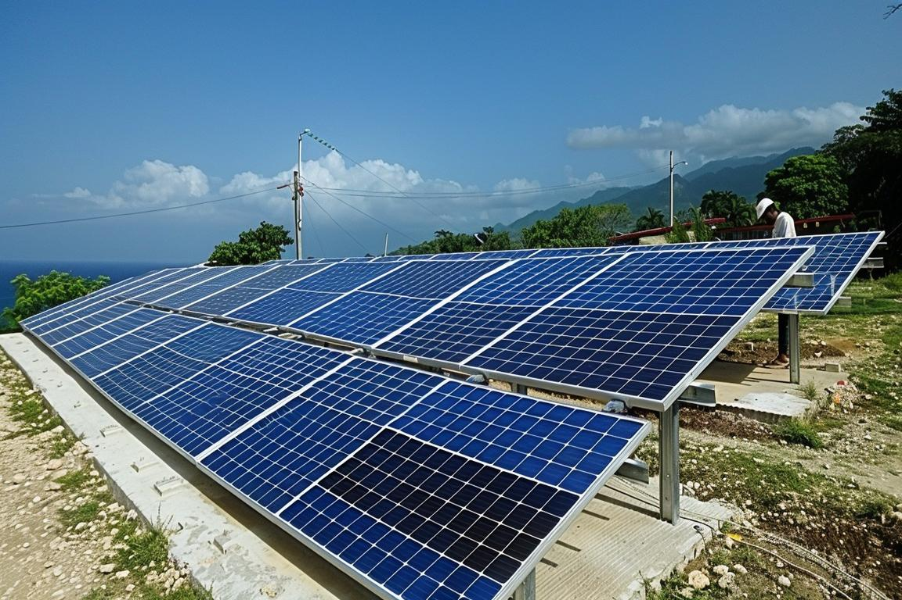
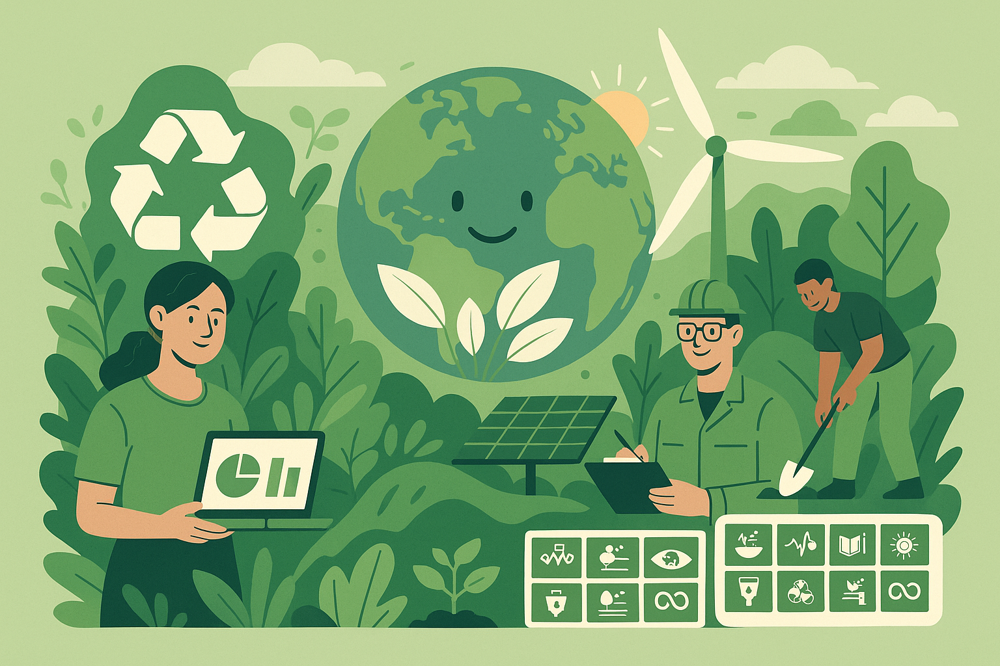

Sustainability Science is an emerging discipline that examines the
dynamic interplay between nature and society, exploring how science,
technology and social transformations influence the environment and vice
versa. Its goal is to advance science and technology to drive a just and
equitable transition toward meeting the UN Sustainable Development
Goals. The 2 year MS Programme in Sustainability Science offered by
IISER Kolkata equips science and engineering graduates with advanced
scientific and technical knowledge to become professional leaders in
addressing sustainability problems in industry and society. The
programme will impart knowledge, tools and skills to pursue careers in
academia, industry, non-governmental organization and government and
become change-agents to drive the goals of a more sustainable planet.
Programme Structure
Curriculum
The curriculum will consist of of a judicial balance of relevant
foundational sciences, data-science driven decision-making, and
practical tools to assess, understand, mitigate, and solve challenges
related to sustainable development. The curriculum will also consist of
laboratory practice and project work. The course will be taught by an
interdisciplinary group of faculties drawn from disciplines of
chemistry, physics, biological sciences, environmental sciences, earth
and geosciences and data sciences. Students will also have opportunity
to learn from renowned guest faculties in areas such as engineering and
technology, economics, social sciences and policy makers to ensure a
360° view of the complex problem of sustainability
Focus Areas
Climate Science and the Mitigation of greenhouse gases
Environmentally Benign Chemistry and Technologies for Chemical
Transformation
Criticality of Energy and Materials for Sustainable Development
Circular Economy Principles
Life Cycle Analysis ( LCA) And Technoeconomic Analysis (TEA)
Ecological Resource Integrity
Social Equity and Just Transition
Public Policy
Internship
A one-semester long internship in industry, research, NGO or Government
is planned to ensure that students get real world experience in applying
their knowledge to solving specific problems and understanding the
complex interplay of disciplines of sciences to find acceptable
solutions
Course Curriculum
The following table provides a semester-wise breakdown of the core and
elective courses offered in the MS in Sustainability Science programme:
Semester
Course 1
Course 2
Course 3
Course 4
Course 5
Course 6
Sem 1
Fundamentals of Sustainability Science
Introduction to Computer Programming
Elective I*
Elective II*
Elective III*
Laboratory course
Sem 2
Biostatistics
Introduction to Economics
Introduction to Ecology, Chemical & Environmental Toxicology
Science of Human-induced climate change
Elective IV**
Project 1
Sem 3
Environmental Science Fieldwork
Quantitative Assesment of Sustainability
One Health
Chemistry of Sustainable Materials
Low Carbon Energy Systems
Project 2
Sem 4
Ecosystem and Biodiversity Economics
Public Policy and Sustainable Development
Industrial Internship/MS Research Project
Elective Courses:
Organic Functional Materials
Polymer Chemistry
Chemistry for Alternative Energy Solutions
Plant Biology
Developmental Biology
Epigenetics
Geology of Natural Resources
Geotechnical Engineering
Career
The 2 years Master's programme is designed to equip students for a
career in industry, non-governmental organization or the Government,
pursuing environmental, sustainability and governance roles, promoting
sustainable practices in society, and activities related to public
policy in the Government organizations. Students desirous of continuing
their education can also pursue further studies/research in the area of
Sustainability Science.
 




